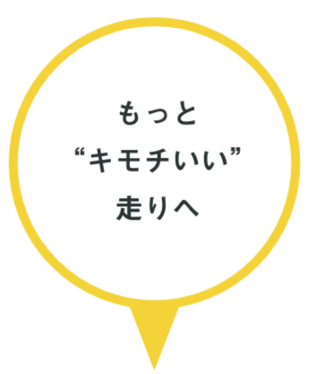
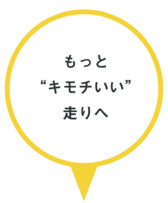
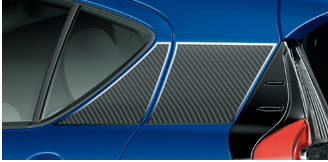
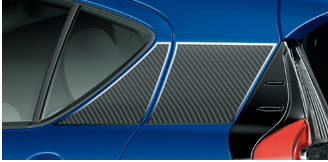

パートナーより、パートナーかも。
あなたの色で、あなたの走りで、ちょっと世界を優しくできる。
あなたの色で、あなたの走りで、ちょっと世界を優しくできる。


幸せを叶えるAQUAのPOINT
 


あなた色にカスタム
カラーリング&パッケージ

¥1,886,760~

パッケージ(エクステリア)
フロントグリル
ボディサイド
リヤライセンス
Premium Package For TOYOTA


個性を彩るプレミアムな装い。メッキ調デカールをご用意。
詳しく見る
Stylish Package For TOYOPET


磨き抜かれたスタイリッシュな装い。金属調デカールをご用意。
詳しく見る
Casual Package For COROLLA


チェッカー柄のデカールで、遊び心溢れる、カジュアルな見栄え。
詳しく見る
Sporty Package For Netz
 


研ぎすまされたスポーティーな出で立ち。カーボン調デカールをご用意。
詳しく見る
エコ運転アシストで楽しく

あなたの運転を「見える化」
マルチインフォメーションディスプレイで、燃費履歴などゲーム感覚で楽しめるコンテンツを採用。あなたのエコ運転をアシストします。

表示される画面は、グレードやオプション装着により異なります。
Crossover、G“ソフトレザーセレクション”、G、Sに標準装備!

エコジャッジ
エコウォレット
燃費履歴

もっと”キモチいい”走りへ
現在のCO2排出量の20%が自動車から排出されています。
ハイブリッド車はガソリン車に比べ45%のCO2を削減できる、地球に優しい車です。
「未来の環境づくり」のために生まれたAQUA。
ハイブリッド車はガソリン車に比べ45%のCO2を削減できる、地球に優しい車です。
「未来の環境づくり」のために生まれたAQUA。
AQUAとTOYOTAは本気で
「CO２ゼロチャレンジ」に取り組んでいます。
「CO２ゼロチャレンジ」に取り組んでいます。
トヨタ環境チャレンジ2050

- 走行時にCO₂を一切出さないクルマの普及を加速。
- 材料製造から部品・車両製造、走行、廃棄まで全体でCO₂を削減。
- 生産工場で、低CO₂技術や再生可能エネルギー導入を推進。

TOYOTA SOCIAL FES!! 2019
地引網などのアクティビティや、地域の名物で作られたお昼ご飯など。ただのボランティアではなく、楽しみながら環境に良いことをするという新しい地域貢献のカタチ。すべての人と一緒に地域の未来をつくる活動です。
より良い未来を作るAQUA、
AQUAといっしょに優しいキモチで走りませんか？
AQUAといっしょに優しいキモチで走りませんか？
オーナーの声
S女性 18才 学生 愛知県 2017.07
燃費が良くて静かで運転がもっと好きになりました。これからも大事に乗っていきたいです！
L女性27才 静岡 2016.07
外装、内装、とても良く高級感がある造り。スタイリング重視してたのでとても気に入り購入しました。
Crossover男性 24才 愛知県 2017.05
カー用品店などで車種専用品が多くあり、カスタマイズがしやすい。
L男性 44歳 三重県 2018.05
毎日の車通勤で、燃費と安全性を考えて、軽自動車を検討していたが、トヨタの安全整備が整っていて、ガソリンとハイブリットの両立で、走行距離が長い車通勤に適しています。 エコドライブにして運転すると、燃費を考えて運転できるため、ガソリンの消費量が少なくて済み助かっています。